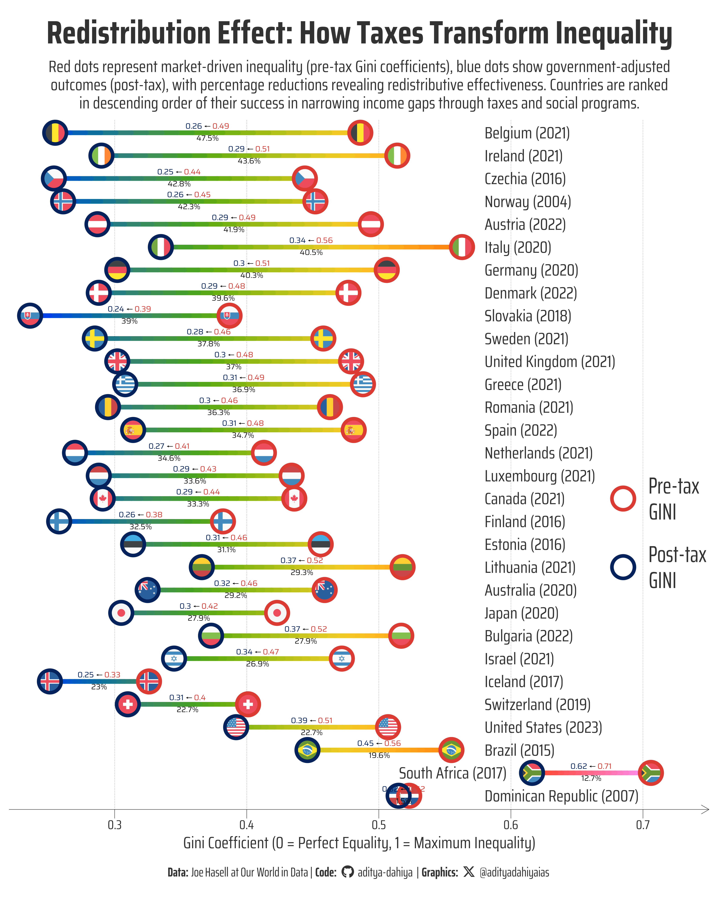

Redistribution Effect: How Taxes Transform Inequality
Dumbbell chart with {ggplot2} techniques: gradient-colored segments, custom legends, and rich text formatting for income inequality visualization.
#TidyTuesday
Dumbbell Chart
Author
Aditya Dahiya
Published
August 6, 2025
About the Data
This analysis explores income inequality before and after taxes using data processed and visualized by Joe Hasell at Our World in Data. The dataset combines information from multiple authoritative sources including the Luxembourg Income Study (2025), OECD’s Income and Wealth Distribution Database (2024), and population data from UN World Population Prospects (2024) and Gapminder. The core metric used is the Gini coefficient, which measures inequality on a scale from 0 to 1, where higher values indicate greater inequality. The data includes both pre-tax income (market income before taxes and most government benefits) and post-tax income (disposable income after taxes and benefits), with income figures equivalized to account for household cost-sharing. This comprehensive dataset enables examination of how different countries redistribute income through their tax and benefit systems, providing insights into the effectiveness of various redistributive policies across nations and over time.

Figure 1: This dumbbell chart compares income inequality before and after government intervention across countries using their most recent available data (years shown in parentheses). Red circles represent pre-tax Gini coefficients, blue circles show post-tax values, and the gradient segments illustrate the transition. Black percentages indicate how much inequality each government reduces through taxes and transfers, revealing dramatic differences in redistributive effectiveness—from minimal impact in some nations to substantial reductions exceeding 40% in others.
How the Graphic Was Created
This advanced dumbbell chart was created using R’s ggplot2 ecosystem with several sophisticated techniques to enhance visual storytelling. The gradient-colored segments were achieved by breaking each line into multiple small segments using dplyr’s rowwise() and do() functions, then mapping colors based on Gini coefficient values along a common scale from 0.22 to 0.75. The visualization required ggnewscale to implement multiple color scales—one for the gradient segments and another for the custom point legend. Rich text formatting for the value labels was accomplished using ggtext’s geom_richtext() function, allowing HTML-styled text with colored numbers and arrows. Country flags within the data points were added using ggflags package’s geom_flag() function. The custom legend was created by plotting invisible dummy points with scale_colour_manual() and guide_legend(), while hiding the gradient legend with guide = "none". Font management was handled through showtext and sysfonts packages, with Google Fonts integration for consistent typography throughout the visualization.
Loading required libraries
Code
pacman::p_load( tidyverse, # All things tidy scales, # Nice Scales for ggplot2 fontawesome, # Icons display in ggplot2 ggtext, # Markdown text support for ggplot2 showtext, # Display fonts in ggplot2 colorspace, # Lighten and Darken colours patchwork, # Composing Plots ggridges, # Making ridgeline plot gghalves # Half geoms in ggplot2)# Option 2: Read directly from GitHubincome_inequality_processed <- readr::read_csv('https://raw.githubusercontent.com/rfordatascience/tidytuesday/main/data/2025/2025-08-05/income_inequality_processed.csv') |> janitor::clean_names()# Not using the raw data in my graphic here# income_inequality_raw <- readr::read_csv('https://raw.githubusercontent.com/rfordatascience/tidytuesday/main/data/2025/2025-08-05/income_inequality_raw.csv')
Visualization Parameters
Code
# Font for titlesfont_add_google("Saira",family ="title_font") # Font for the captionfont_add_google("Saira Condensed",family ="body_font") # Font for plot textfont_add_google("Saira Extra Condensed",family ="caption_font") showtext_auto()# A base Colourbg_col <-"white"seecolor::print_color(bg_col)# Colour for highlighted texttext_hil <-"grey20"seecolor::print_color(text_hil)# Colour for the texttext_col <-"grey20"seecolor::print_color(text_col)line_col <-"grey30"# Custom Colours for dotscustom_dot_colours <- paletteer::paletteer_d("nbapalettes::cavaliers_retro")# Custom size for dotssize_var <-14# Define Base Text Sizebts <-80# Caption stuff for the plotsysfonts::font_add(family ="Font Awesome 6 Brands",regular = here::here("docs", "Font Awesome 6 Brands-Regular-400.otf"))github <-""github_username <-"aditya-dahiya"xtwitter <-""xtwitter_username <-"@adityadahiyaias"social_caption_1 <- glue::glue("<span style='font-family:\"Font Awesome 6 Brands\";'>{github};</span> <span style='color: {text_hil}'>{github_username} </span>")social_caption_2 <- glue::glue("<span style='font-family:\"Font Awesome 6 Brands\";'>{xtwitter};</span> <span style='color: {text_hil}'>{xtwitter_username}</span>")plot_caption <-paste0("**Data:** Joe Hasell at Our World in Data", " | **Code:** ", social_caption_1, " | **Graphics:** ", social_caption_2 )rm(github, github_username, xtwitter, xtwitter_username, social_caption_1, social_caption_2)# Add text to plot-------------------------------------------------plot_title <-"Redistribution Effect: How Taxes Transform Inequality"plot_subtitle <-"Red dots represent market-driven inequality (pre-tax Gini coefficients), blue dots show government-adjusted outcomes (post-tax), with percentage reductions revealing redistributive effectiveness. Countries are ranked in descending order of their success in narrowing income gaps through taxes and social programs."|>str_wrap(110)str_view(plot_subtitle)
Exploratory Data Analysis and Wrangling
Code
# Check which year has the most countriesincome_inequality_processed |>drop_na() |>count(year, sort = T) |>arrange(desc(year))# ============================================================================# DATA PREPARATION AND TRANSFORMATION# ============================================================================plot_data <- income_inequality_processed |># Remove rows with missing values in any columndrop_na() |># Group countries to get most recent year data for eachgroup_by(entity) |>slice_max(order_by = year, n =1) |># Keep only the latest year per countryungroup() |># Remove grouping for subsequent operations# Calculate improvement metrics for visualizationmutate(# Calculate proportional improvement (reduction in inequality)improvement = (gini_mi_eq - gini_dhi_eq)/gini_mi_eq,# Convert to percentage and round for clean displaypercentage_reduction =round(improvement *100, 1) ) |># Add country codes for plotting flagsmutate(country_code =str_to_lower( countrycode::countrycode(code, "iso3c", "iso2c") ) )# Create a common gradient data set for colouring the line segmentsgradient_data <- plot_data |>rowwise() |>do({ n_segments <-20# Number of small segments per line x_vals <-seq(.$gini_mi_eq, .$gini_dhi_eq, length.out = n_segments +1)# Use actual Gini values for common color scale (0.22 to 0.75) color_vals <- x_vals[-length(x_vals)] # Use x-position for color mappingdata.frame(entity = .$entity,x = x_vals[-length(x_vals)],xend = x_vals[-1],color_position = color_vals, # Color based on actual Gini valuesimprovement = .$improvement,gini_mi_eq = .$gini_mi_eq,gini_dhi_eq = .$gini_dhi_eq,percentage_reduction = .$percentage_reduction ) }) |>ungroup()# A small custom dataframe for making a custom legendlegend_df <-tibble(entity =c("Canada", "Lithuania"),gini_value =c(0.685),type =c("Pre-tax\nGINI", "Post-tax\nGINI"),dot_colours = custom_dot_colours)
The Plot
Code
# CREATE THE DUMBBELL CHARTg <- plot_data |># Initialize plot with countries ordered by improvement on y-axisggplot(mapping =aes(y =reorder(entity, improvement) # Order countries by redistribution effectiveness ) ) +# ---------------------------------------------------------------------# DUMBBELL SEGMENTS (connecting lines with gradient along each segment)# ---------------------------------------------------------------------# Plot the gradient segmentsgeom_segment(data = gradient_data,mapping =aes(x = x,xend = xend,# Color varies based on Gini coefficient valuescolour = color_position ),linewidth =3.5,lineend ="round" ) + paletteer::scale_colour_paletteer_c("pals::kovesi.rainbow_bgyrm_35_85_c71") +# paletteer::scale_colour_paletteer_c("viridis::turbo") + ggnewscale::new_scale_colour() +# ---------------------------------------------------------------------# ADD COUNTRY FLAGS INSIDE THE DOTS (which we will plot later)# --------------------------------------------------------------------- ggflags::geom_flag(mapping =aes(x = gini_mi_eq,country = country_code ),size = size_var *0.9 ) + ggflags::geom_flag(mapping =aes(x = gini_dhi_eq,country = country_code ),size = size_var *0.9 ) +# --------------------------------------------------------------------# DUMBBELL POINTS (pre-tax and post-tax markers)# --------------------------------------------------------------------# Pre-tax inequality points (red)geom_point(mapping =aes(x = gini_mi_eq, # Position at pre-tax Gini value ),colour = custom_dot_colours[1], size = size_var, pch =21, stroke =4,fill =NA ) +# Post-tax inequality points (blue)geom_point(mapping =aes(x = gini_dhi_eq, # Position at post-tax Gini valuey =reorder(entity, improvement) ),colour = custom_dot_colours[2], size = size_var, pch =21, stroke =4,fill =NA ) +# -------------------------------------------------------------------------# COUNTRY NAME LABELS# -------------------------------------------------------------------------geom_text(mapping =aes(x =0.58, label =paste0(entity, " (", year, ")"), y =reorder(entity, improvement),# Special alignment for South Africa (right-aligned), others left-alignedhjust =ifelse(entity =="South Africa", 0.8, 0) ),size = bts /2.8, colour = text_hil,family ="body_font" ) +# -------------------------------------------------------------------------# RICH TEXT LABELS (values with colored formatting)# -------------------------------------------------------------------------geom_richtext(mapping =aes(x = (gini_mi_eq + gini_dhi_eq) /2, # Center labels between points# Create multi-line HTML formatted textlabel =paste0("<span style='color:",custom_dot_colours[1], "'>", round(gini_mi_eq, 2), "</span> ← ", # Pre-tax in red"<span style='color:",custom_dot_colours[2], "'>", round(gini_dhi_eq, 2), "</span><br>", # Post-tax in blue"<span style='color:grey10'>", percentage_reduction, "%</span>" ) ),fill =NA,label.color =NA, size = bts /6, vjust =0.5, label.padding =unit(0.05, "lines"),lineheight =0.5,family ="title_font" ) +# -------------------------------------------------------------------------# SCALES + COLOR SCALE + LABELS# -------------------------------------------------------------------------guides(colour ="none") +# Creating a Custom Legend ------------------------------------------------geom_point(data = legend_df,mapping =aes(x = gini_value,y = entity,colour = dot_colours ),size = size_var,pch =21,fill =NA,stroke =4 ) +geom_text(data = legend_df,mapping =aes(x = gini_value,y = entity,colour = dot_colours,label = type ),size = bts /2,vjust =0.5,hjust =0,nudge_x =0.02,family ="caption_font",lineheight =0.3,colour = text_col ) +scale_colour_identity() +scale_x_continuous(limits =c(0.22, 0.75),expand =expansion(0) ) +labs(title = plot_title,subtitle = plot_subtitle,x ="Gini Coefficient (0 = Perfect Equality, 1 = Maximum Inequality)",y =NULL,caption = plot_caption ) +theme_minimal(base_family ="body_font",base_size = bts ) +theme(# Legend: Not needed as colour does not convey any additional informationlegend.position ="none",# Overalltext =element_text(margin =margin(0,0,0,0, "mm"),colour = text_col,lineheight =0.3 ),# Labels and Strip Textplot.title =element_text(margin =margin(5,0,5,0, "mm"),hjust =0.5,vjust =0.5,colour = text_hil,size =2* bts,family ="body_font",face ="bold" ),plot.subtitle =element_text(margin =margin(2,0,5,0, "mm"),vjust =0.5,colour = text_hil,size = bts,hjust =0.5,family ="body_font",lineheight =0.3 ),plot.caption =element_textbox(margin =margin(8,0,5,0, "mm"),hjust =0.5,halign =0.5,colour = text_hil,size = bts *0.8,family ="caption_font" ),plot.caption.position ="plot",plot.title.position ="plot",plot.margin =margin(5,5,5,5, "mm"),panel.grid.minor.y =element_blank(),panel.grid.major.y =element_blank(),panel.grid.minor.x =element_blank(),panel.grid.major.x =element_line(colour =alpha(text_hil, 0.7),linewidth =0.3,linetype =3 ),# Axes Lines, Ticks, Text and labelsaxis.line.x =element_line(colour = text_hil,linewidth =0.3,arrow =arrow(length =unit(5, "mm")) ),axis.line.y =element_blank(),axis.ticks.x =element_line(colour = text_hil,linewidth =0.3, ),axis.ticks.length =unit(5, "mm"),axis.ticks.length.y =unit(0, "mm"),axis.ticks.y =element_blank(),axis.text.x =element_text(margin =margin(1,1,1,1, "mm"),colour = text_hil ),axis.text.y =element_blank(),axis.title.y =element_blank(),axis.title.x =element_text(colour = text_hil,margin =margin(2,0,0,0, "mm"),size = bts ) )ggsave(filename = here::here("data_vizs","tidy_income_inequality.png" ),plot = g,width =400,height =500,units ="mm",bg = bg_col)
Savings the thumbnail for the webpage
Code
# Saving a thumbnaillibrary(magick)# Saving a thumbnail for the webpageimage_read(here::here("data_vizs", "tidy_income_inequality.png")) |>image_resize(geometry ="x400") |>image_write( here::here("data_vizs", "thumbnails", "tidy_income_inequality.png" ) )
Session Info
Code
pacman::p_load( tidyverse, # All things tidy scales, # Nice Scales for ggplot2 fontawesome, # Icons display in ggplot2 ggtext, # Markdown text support for ggplot2 showtext, # Display fonts in ggplot2 colorspace, # Lighten and Darken colours patchwork # Composing Plots)sessioninfo::session_info()$packages |>as_tibble() |> dplyr::select(package, version = loadedversion, date, source) |> dplyr::arrange(package) |> janitor::clean_names(case ="title" ) |> gt::gt() |> gt::opt_interactive(use_search =TRUE ) |> gtExtras::gt_theme_espn()
Table 1: R Packages and their versions used in the creation of this page and graphics